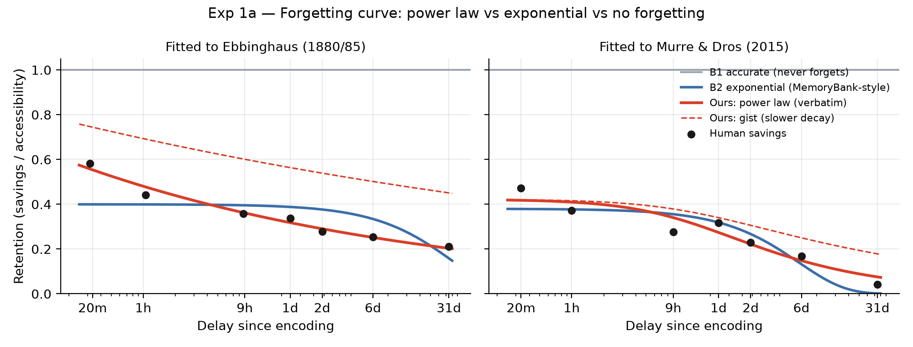
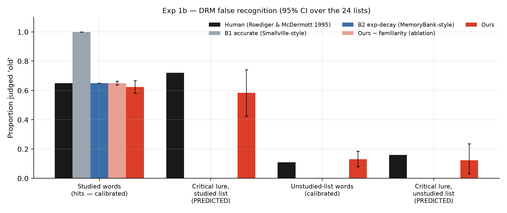
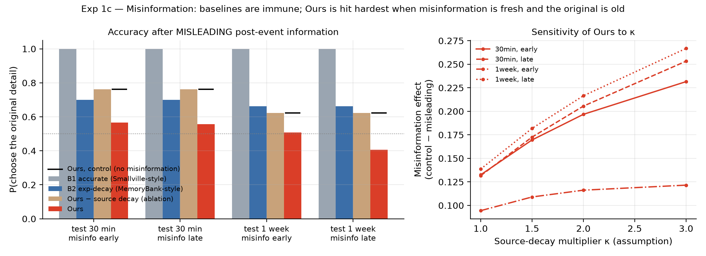
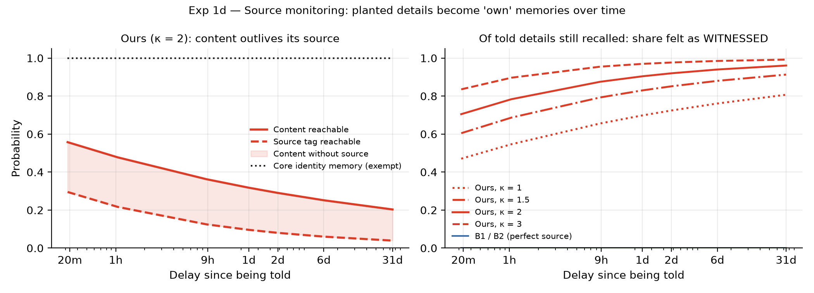

Abstract—Memory systems for large-language-model (LLM) agents are usually built to make recall more accurate and more efficient. We invert that goal. For a believable non-player character (NPC) in a detective game, the interesting regime is human-calibrated error: a character who forgets detail before gist, mistakes a told detail for a witnessed one, and false-alarms to a semantically related lure, while its core identity stays stable. We present a memory layer that composes four published mechanisms — power-law accessibility decay, global-matching familiarity, faster-decaying source tags, and reconsolidation — under a core-identity exemption, and we evaluate it at two levels. At the memory level (no LLM), the layer reproduces four signature human phenomena that standard agent memories cannot: a power-law forgetting curve that fits Ebbinghaus (R2=0.97) and predicts a modern replication better than exponential decay; Deese–Roediger–McDermott (DRM) false recognition that emerges from semantic similarity alone (predicted critical-lure false-alarm rate 0.59 vs. human 0.72); a time-dependent misinformation effect; and growing source misattribution. Each phenomenon vanishes when its mechanism is ablated, and every effect is absent in a Smallville-style (never-forgets) and a MemoryBank-style (exponential-decay) baseline. At the LLM level we show a preliminary end-to-end pipeline in which a local 3B model voices only what the layer makes reachable; when the layer drops a planted detail's source tag, the suspect states it as first-hand (0.54) rather than attributing it. We report the pipeline's current limitations (small-model source confusion and confabulation) candidly. The contribution is the objective inversion, multi-paradigm calibration, and an interrogation-game evaluation in which players must tell an honest false memory from a deliberate lie — not a new algorithm.
Index Terms—LLM agents, believable NPCs, human memory, false memory, source monitoring, interactive narrative, cognitive modelling.
Persistent-memory agents such as Generative Agents (“Smallville”) [1] give NPCs a sense of continuity by retrieving past experiences verbatim. Subsequent work makes that memory cheaper or more accurate — forgetting as compression, exponential decay to bound context, graph consolidation. For a mystery game this is the wrong target. A suspect who recalls the night of the murder perfectly is not a person; a suspect who simply forgets at random is not interesting. What a detective game needs is a witness who errs the way people err: losing peripheral detail while keeping the gist, confusing what they were told with what they saw, and occasionally “remembering” something that was only implied — all while never forgetting who they are.
We call this fallibility by design, and we treat it as a measurable engineering target rather than a prompt-time afterthought. Our demonstrator, Ravenswood, is a 1920s interrogation mystery in which the player questions suspects and must separate a deliberate lie from an honest false memory. The distinction is only meaningful if the false memories are produced by a controlled, inspectable process. That process is the memory layer described here.
Contributions.
We explicitly do not claim a new algorithm, that the model “believes” anything, or that we invented human-like agent memory; every individual mechanism is published. The novelty is the composition, the calibration, and the game evaluation.
Persistent agent memory. Generative Agents [1] score memories by recency, importance and relevance and retrieve them intact. MemoryBank-style systems [2] add Ebbinghaus-inspired exponential decay to manage scale. These are our baselines B1 (never forgets) and B2 (decays but never errs).
Forgetting and false memory in humans. The forgetting curve is better described by a power law than an exponential [3], [4]. The DRM paradigm [5] shows reliable false recognition of a non-presented “critical lure” semantically related to a studied list. Misinformation [6] shows post-event suggestions displacing original memories, most strongly when the original is weak and the suggestion fresh. Source monitoring [7] explains how content outlives its origin, producing “I saw it” errors. We model recognition as a dual process (recollection or familiarity) [8] with familiarity computed by MINERVA-2 global matching [9].
Memory effects in LLMs and NPC games. LLMs already exhibit some in-context false recall, but uncontrolled and without persistence or time dynamics; our claim is control, persistence and source decay, exposed as a game dial. Detective and role-play agents have been explored, but to our knowledge none couples a persistent identity with a human-calibrated distortion layer evaluated against human memory data.
| Forgets? | Errs like people? | Source decay? | |
|---|---|---|---|
| B1 Smallville [1] | no | no | no |
| B2 MemoryBank [2] | yes | no | no |
| B3 “act human” (prompt only) | erratic | erratic | no |
| Ours | yes | yes | yes |
A memory is a record m = (text, t, slots, strength, source, core, rehearsals, v) with an embedding v (all-MiniLM-L6-v2, 384-d). The layer returns probabilities of access, so the evaluation is deterministic; sampling is left to the game.
Accessibility (power law). For a non-core memory the probability its full detail is reachable at time t is
pverb(m,t) = min( 1, a · bm · (1 + Δt/τ)−d ),
with Δt = t − m.t and boost bm = strength · (1 + ρ · rehearsals). The gist uses a smaller exponent d · gist_ratio, so it outlives the detail (fuzzy-trace theory). A memory is never deleted — only its access probability falls.
Recognition (dual process). A probe is called “old” if it is recollected or feels familiar: pold = 1 − (1 − prec)(1 − Φ((F − c)/σ)), where familiarity is global matching over stored gist traces, F = Σj pgist(mj) · max(0, cos(v,vj))k. A never-studied word close to many traces (a DRM lure) can clear the criterion c; this is the only source of false recognition and it is not hand-coded per list.
Source monitoring. The source tag decays faster than content, exponent κ · d with κ > 1. If content is reached but the tag is not, a told detail is recalled as witnessed.
Misinformation (2AFC). Choice between an original and a rival detail follows Luce's rule [10]; a reachable rival is discounted only while its source tag (“the detective said so”) survives.
Reconsolidation and core protection. Retrieval-and-retelling increments rehearsals (a boost); core memories (identity) never decay, blend or lose their source — the mechanism behind selective fallibility.
Baselines and ablations. B1 keeps everything perfectly; B2 uses exponential decay but exact, correctly-sourced content; B3 (LLM only) is told to “act human.” Ablations remove familiarity (DRM) or source decay (misinformation).
No LLM is involved here: we evaluate the layer's probabilities directly. All numbers are produced by a single script; confidence intervals are percentile bootstraps (4,000 resamples) over the 24 DRM lists.

1a — Forgetting curve. Fitting each model to Ebbinghaus [4] and predicting the modern replication without refitting (Fig. 1, Table II), the power law dominates in fit (R2=0.974 vs. 0.397; ΔAICc ≈ 15) and in held-out prediction, in both directions (0.094/0.096 vs. 0.112/0.122). Caveat: the fitted scale a sits at its upper bound and τ ≈ 13 s, so the curve is effectively a pure power law; savings are a shape reference, not recall.
| Model | R2 | RMSE | AICc | held-out RMSE |
|---|---|---|---|---|
| Ours (power law) | 0.974 | 0.019 | −41.7 | 0.094 |
| B2 (exponential) | 0.397 | 0.091 | −26.6 | 0.112 |
| B1 (no forgetting) | — | 0.659 | — | 0.743 |

1b — DRM false recognition. Following R&M [5] (24 lists, three counterbalanced groups) we calibrate only on studied-item responses (remember 0.41, know 0.24, unrelated 0.11); critical-lure rates are predictions (Table III, Fig. 2). Our model predicts a critical-lure false-alarm rate of 0.59 [0.43, 0.74] (human 0.72) while every baseline and the no-familiarity ablation predict exactly zero. Which lists produce lures is predicted by lure-to-list similarity (Spearman ρ=0.69, p=2×10−4). Two honest limits: (i) the targets were not jointly reachable under raw embeddings (max attainable “know” 0.20 < 0.24) because sentence embeddings are anisotropic [11]; a post-hoc mean-centred rerun makes calibration exact but lowers the lure rate to 0.27 [0.23, 0.31] (ρ=0.92), so the effect's magnitude depends on embedding geometry; (ii) all our lure false alarms are “know”, none “remember” — the model reproduces familiarity, not phantom recollection.
| Studied | Lure | Unrel. | Lure (unstud.) | |
|---|---|---|---|---|
| Human [5] | 0.65 | 0.72 | 0.11 | 0.16 |
| Ours | 0.62 | 0.59 | 0.13 | 0.12 |
| Ours − familiarity | 0.65 | 0.00 | 0.00 | 0.00 |
| B1 / B2 | 0.65/1.0 | 0.00 | 0.00 | 0.00 |

1c — Misinformation (demonstration). With a misleading detail planted after a witnessed event (Fig. 3), our model's accuracy falls from 0.62 (control) to 0.41 when the suggestion arrives late in a one-week interval, and least (0.51) when it arrives early — the human timing pattern [6]. B1, B2 and the no-source-decay ablation show a zero effect. Because κ (relative source-decay speed) is an assumption with no fitted human value here, we sweep it (1–3); the pattern holds throughout and the human figures we compare against are secondary-source, so this is labelled a demonstration.

1d — Source monitoring (demonstration). Of planted details still recalled, the fraction recalled as witnessed rises with delay (e.g. κ=2: 0.71 at 20 min to 0.96 at 31 days; Fig. 4), while a core-identity memory stays at 1.0 throughout. B1/B2 never misattribute. This is the formal basis of the game's lie-vs-honest-mistake ambiguity.
We next ask whether an LLM voice follows the layer. The pipeline is: the layer samples a recalled view (which seed memories survive, and whether a planted “woman in a red dress” detail is framed as witnessed or as told); the view is rendered into a system prompt; a local model (qwen2.5-coder:3b via Ollama) speaks, returning a structured stance on the planted detail. We compare our layer against B0 (perfect witness: full, correctly-sourced view) and B3 (same full view plus a “you have ordinary human memory” instruction), 12 seeds per cell, at three simulated delays.
Signal. When the layer drops the source tag (frames the detail as witnessed), the suspect states it as first-hand in 0.54 of runs and never attributes it to the detective; our condition's attribution rate to the detective is 0.00 because, under the fitted τ, the source tag is almost always gone by the morning after. The honest false memory rises then falls with delay (0.25 → 0.42 → 0.33), the fall reflecting that by a week the detail is often forgotten entirely — one cannot misattribute what one no longer recalls.
Limitations (reported, not hidden). The 3B model adds substantial noise: the perfect-witness baseline itself says “I saw her” in 0.33 of runs despite a correctly-sourced view (small-model source confusion), and when the layer has forgotten the detail the model still produces the woman in 0.24 of runs (confabulation). The small τ inherited from Exp 1a compresses the source-tag dynamics below our probe delays. These make Study 2 a proof-of-concept of the pipeline, not a calibrated result; the clean, calibrated claims are all at the memory level (Study 1). Mitigations — a game-appropriate time constant, a larger or instruction-tuned voice model, a separate LLM judge for stance labelling, and a cross-model check (gemma3:1b) — are immediate next steps.
Standard agent memories are either superhuman (B1) or forget without ever erring (B2). The composed layer instead produces the human types of error in the right direction and shape, and each error type disappears when its mechanism is ablated, so causation is attributable to a named mechanism rather than to tuning. For the game, this converts “lie vs. honest mistake” from a narrative claim into a logged, inspectable property: every statement can be labelled against the character's reachable memory and against ground truth, and a Memory Inspector can show the retrieval and distortion behind each line. Fairness is preserved because physical evidence always suffices to solve the case regardless of testimony, and a single difficulty dial (κ and decay rate) tunes how fallible suspects are.
Scope we can still investigate. (1) DRM magnitude: raise the predicted lure rate toward the human 0.72 with a better or domain-adapted embedding space, and add a gist→recollection path for phantom recollection. (2) Calibrate κ against primary source-monitoring and misinformation data, replacing the demonstrations with fits. (3) Study 2 proper: larger N, an independent LLM-judge for stance, two model families, and a game-clock time constant. (4) Study 3: an AI-detective proxy sweeping fallibility to a solve-rate dose-response, then a within-subjects player pilot (N ≈ 12–24, memory ON vs. OFF) measuring solve rate, turns, lie-vs-mistake discrimination and believability. (5) Selective fallibility over long sessions: core-consistency vs. peripheral-accuracy curves across simulated days. Fine-tuning, autonomy loops, group conformity and stress effects are out of scope for this version.
Treating memory error as the design target, rather than a defect to minimise, we built a layer that reproduces four signature human memory phenomena a persistent LLM agent otherwise cannot, with each effect traceable to a named, ablatable mechanism and absent in standard-agent baselines. A preliminary pipeline shows an LLM character voicing the layer's decisions. The remaining gap — human magnitudes and a calibrated end-to-end character — defines a concrete research programme toward NPCs whose honest mistakes are as readable, and as fair to play against, as their lies.
All Study 1 numbers and figures are regenerated by research/experiments/run_study1.py; the LLM study by llm_source_fidelity.py. Human reference values, with sources and verification status, are in research/data/human_reference.json.